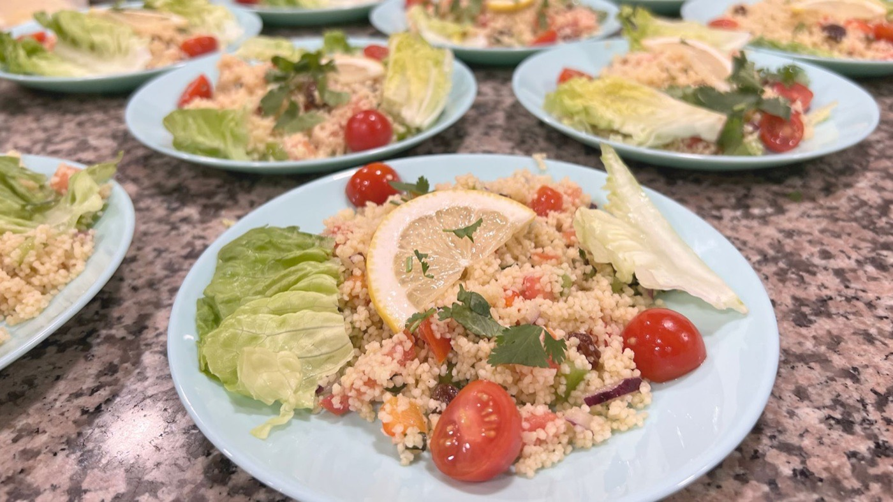
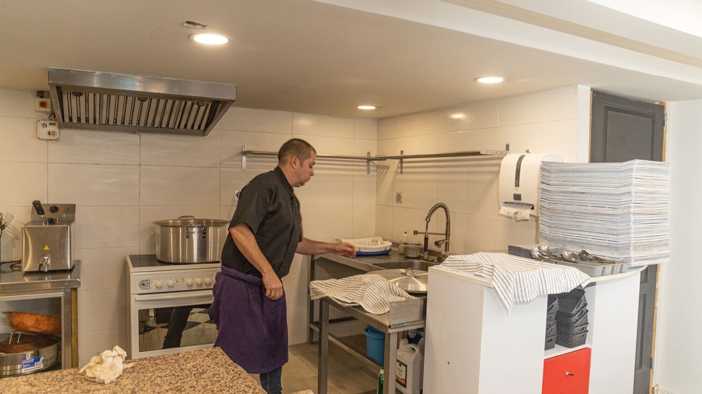
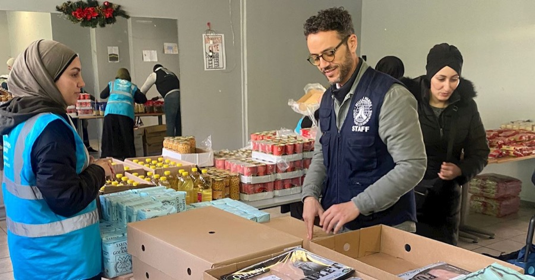
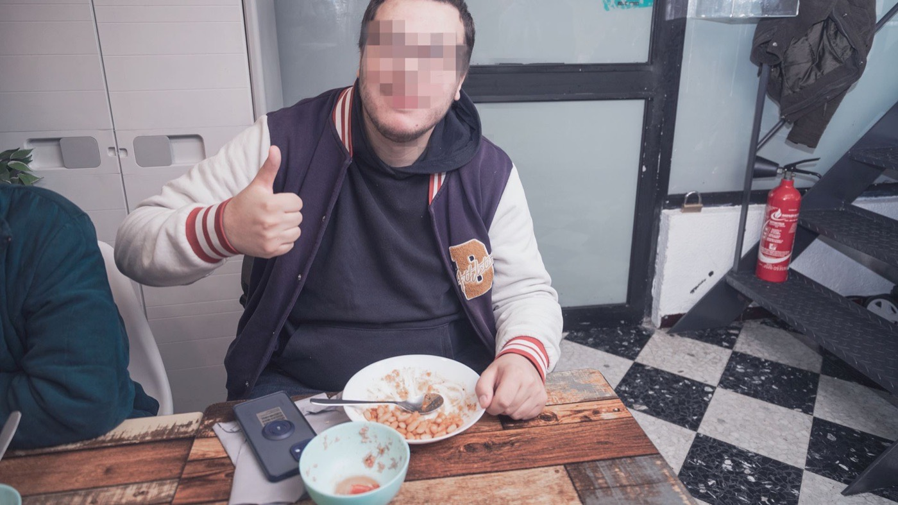
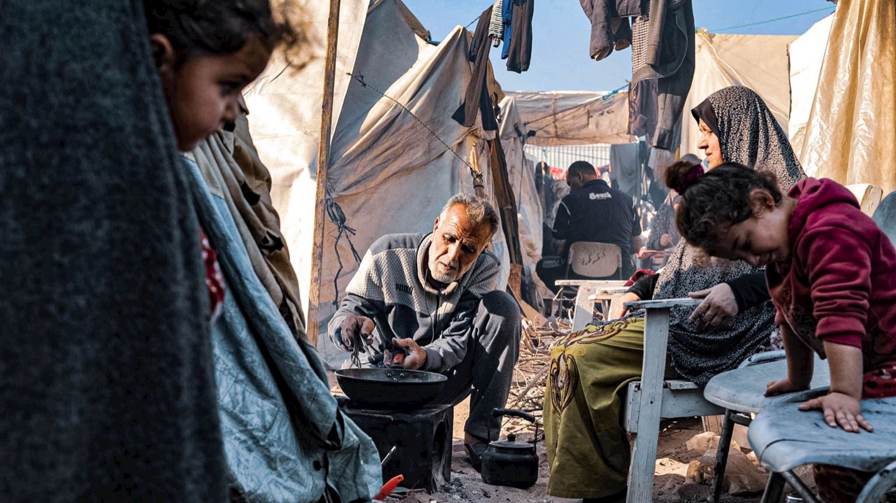

Lyon
Maraudes à la Part-Dieu, accompagnement de 175 mineurs non accompagnés (cours de français, inclusion numérique, accès aux droits), opération Back to School à la rentrée.
Nos actions à LyonUne salle, des tables dressées, un menu du jour affiché à l'entrée, un chef en cuisine et des bénévoles en salle. La Fourchette Fraternelle est un restaurant solidaire ouvert aux personnes isolées, aux familles en difficulté, aux étudiants précaires et aux retraités à petite pension. On s'inscrit à l'entrée, sans justificatif, et on est servi à table, comme partout ailleurs. C'est ce qui fait la différence : la dignité d'un repas partagé, pas une file d'attente.
Le restaurant est ouvert du lundi au vendredi, de 12 h à 14 h. En 2024, 20 000 repas y ont été servis. Les produits frais sont achetés chaque matin auprès de fournisseurs marseillais ; les produits secs viennent de nos donateurs et de nos partenaires de l'aide alimentaire.

20 € vous coûtent 5 € après réduction d'impôt de 75 %.
Je soutiens MarseilleDispositif Coluche : 75 % jusqu'à 2 000 €, puis 66 % · reçu fiscal immédiat
Deux soirs par semaine, nos équipes partent du restaurant avec des repas chauds, des boissons chaudes et des kits d'hygiène, et vont à la rencontre des personnes qui dorment dans le centre-ville et autour de la gare Saint-Charles. L'hiver, les sacs se remplissent de duvets, de bonnets et de gants : c'est la campagne hiver, du 2 novembre au 28 février. Au-delà du repas, une maraude, c'est un visage connu, une conversation, une orientation vers les services sociaux quand la personne le souhaite.

Pendant le Ramadan, La Fourchette Fraternelle ouvre aussi le soir. Le grand iftar méditerranéen rassemble chaque année des centaines de convives, personnes en difficulté et habitants du quartier, musulmans ou non, autour d'une même table. Les repas sont financés par le fonds Ramadan et la zakat al fitr collectée en France.

| Don | Ce qu'il permet | Coût après impôt | Fiche |
|---|---|---|---|
| 5 € | Un repas chaud servi à table à La Fourchette Fraternelle | 1,25 € | Donner |
| 20 € | Quatre repas, ou un kit d'hygiène complet distribué en maraude | 5 € | Donner |
| 50 € | Dix repas chauds, ou une soirée de maraude pour deux bénévoles | 12,50 € | Donner |
| 100 € | Un service complet de midi : vingt couverts, du marché au dessert | 25 € | Donner |
| 30 € | Un colis chaleur pour une personne sans abri (hiver) | 7,50 € | Donner |
Les dons qui financent la fourniture gratuite de repas, de soins ou d'un hébergement aux personnes en difficulté bénéficient du dispositif « Coluche » : 75 % de réduction d'impôt jusqu'à 2 000 € par an, puis 66 % au-delà. La Fourchette Fraternelle, les maraudes et les iftars solidaires y sont éligibles. 20 € vous coûtent 5 €, 100 € vous coûtent 25 €. Le reçu fiscal est envoyé par e-mail immédiatement après le don. Comprendre les deux taux et simuler mon don.

Servis à table à La Fourchette Fraternelle, du lundi au vendredi.
Deux soirs par semaine dans le centre et autour de la gare Saint-Charles.
Des centaines de convives réunis chaque soir du Ramadan autour d'une même table.
Service, cuisine, maraudes, logistique : une équipe marseillaise.
Les comptes de nos actions en France sont publiés chaque année dans le rapport annuel.

« Ici, on me demande si j'ai bien mangé, pas si j'ai des papiers. Je viens pour le repas, je reste pour les gens. »Karim, convive de La Fourchette Fraternelle depuis 2024

Service en salle, cuisine, maraudes, logistique, traduction : il y a une place pour chacun, une heure par semaine ou une fois par mois. Aucune compétence n'est requise ; une réunion d'accueil a lieu chaque mois. Laissez-nous vos coordonnées, l'équipe de Marseille vous recontacte sous une semaine.
Toute personne en difficulté : personnes isolées ou sans abri, familles précaires, étudiants, retraités à petite pension. Aucun justificatif n'est demandé ; on s'inscrit à l'entrée, on est servi à table.
Oui, du lundi au vendredi de 12 h à 14 h, hors jours fériés. Pendant le Ramadan, le restaurant ouvre aussi le soir pour le grand iftar méditerranéen.
Les dons qui financent la fourniture gratuite de repas aux personnes en difficulté bénéficient du dispositif « Coluche » : 75 % de réduction d'impôt jusqu'à 2 000 € par an, puis 66 %. La Fourchette Fraternelle et les maraudes y sont éligibles. 20 € vous coûtent 5 €.
Remplissez le formulaire de cette page ou appelez le 01 49 48 05 05. Service en salle, cuisine, maraudes, logistique, traduction : une heure par semaine ou une fois par mois, sans compétence requise. Une réunion d'accueil a lieu chaque mois.
Oui : produits secs, conserves, huile, café et thé non ouverts, déposés aux heures d'ouverture. Les produits frais sont achetés par le chef auprès de fournisseurs locaux pour garantir la chaîne du froid.
Oui. À Lyon : maraudes à la Part-Dieu et accompagnement de 175 mineurs non accompagnés. À Paris et Saint-Ouen : maraudes gare du Nord et porte de la Chapelle, iftars solidaires au siège.